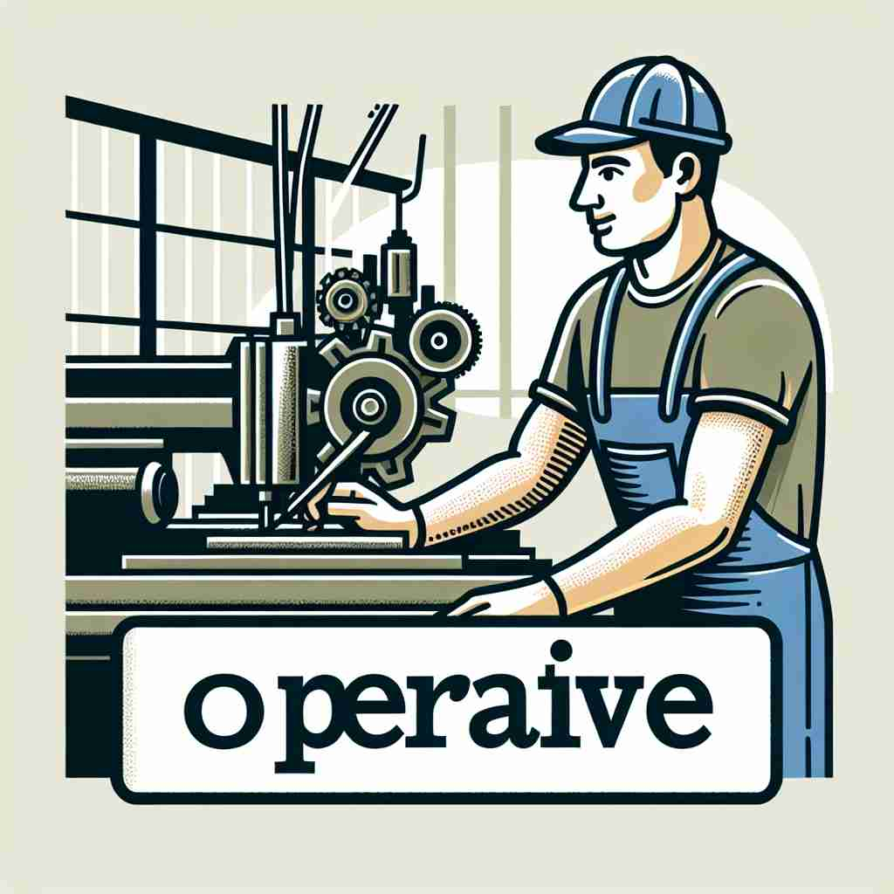

🗝️ adj. able to function or be used
🖼️ 在一个繁忙的办公室里，IT技术人员检查着一台电脑，确保它没有故障。两分钟后，他满意地说：'系统现在完全operative了！'展示了'operative'作为能够正常运作的含义。
🔍 operative 的核心含义是"能够运作或使用"。想象一台正在运转的机器，它是"operative"的。从这个核心概念，我们可以联想到正在进行的活动、能够操作的人、执行秘密任务的特工，以及与手术相关的事物。所有这些含义都围绕着"运作"或"操作"这个核心概念展开，帮助你更容易理解和记忆这个词的多重用法。

💬 The team is designing an operative device for their project.

💬 The engineer checks if the operative machine is working correctly.

💬 The operative machinery is essential for the factory's production.
💬 The factory has many operative machinery for making products.
💡 记忆 'operative' 时，可以联想 'operate'（操作）+ '-ive'（形容词后缀），即某事物处于可操作或正在运行的状态，例如'有效的'或'运作中的'。
🗝️ adj. involved in a particular activity or process
🖼️ 在一家汽车制造厂，工程师们正忙碌地测试新型跑车的性能。他们讨论着各个组件如何彼此协作，确保所有测试程序都处于operative状态，展示了'operative'在特定活动中的参与性。
💬 The operative word in this contract is 'temporarily'.
❓ 从"能够运作"延伸到"正在进行中的"
🗝️ n. a person who works skillfully with their hands
🖼️ 在一个木工车间里，一位经验丰富的木工正在精细地雕刻一块木板。他熟练地使用工具，将木料转换成一件艺术作品，此时他就是个典型的'operative'，展现了手工技巧的精湛。
💬 The factory employs over 100 operatives.
❓ 从"能够运作"引申为"能够操作的人"
🗝️ n. a secret agent or spy
🖼️ 在一座昏暗的地下室里，一位身穿黑色西装的男子正在接收秘密任务。他低声与上级耳语交流，确保任务信息的准确性。这位男子是一个高级的'operative'，即一个秘密特工。
💬 The government sent several operatives to gather intelligence.
❓ 从"能够操作"引申为"能够执行秘密任务的人"
🗝️ adj. relating to or involved in a surgical operation
🖼️ 在医院的手术室里，外科医生正在准备进行复杂的手术。他检查了所有operative工具，确保手术过程中万无一失。这里的'operative'指的是与外科手术相关的事物。
💬 The patient's operative care was excellent.
❓ 从"能够运作"延伸到"与手术相关的"